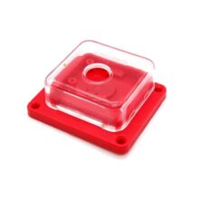

Корпус для камер Raspberry Pi V1/V2/V3 и Arducam 16MP/64MP (красный)
МеханикаЭто официальный корпус Raspberry Pi 3 Case в красно-белом исполнении, предназначенный для Raspberry Pi 3 Model B и B+. Он защищает плату и оставляет доступ к GPIO, камере и дисплею.
Корпус рассчитан именно на Raspberry Pi 3 Model B и Raspberry Pi 3 Model B+, а не на сами камеры. В описании производителя указано, что у него есть съёмные боковые панели и крышка для удобного доступа к разъёмам GPIO, camera и display. Корпус выполнен из ABS-пластика и выпускается в варианте red/white, что соответствует позиции «красный». Если у товара в магазине указана совместимость с Raspberry Pi V1/V2/V3 и Arducam 16MP/64MP, это обычно означает, что корпус сделан под типовой форм-фактор Raspberry Pi camera/совместимых модулей, а не под один конкретный сенсор.